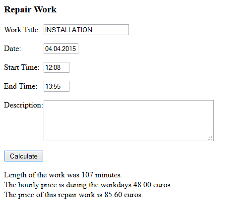

A construction firm is doing small repairs. Make a program for inputting the repair work details and calculating its price. The price for an hour of work is 48 during the workdays and 72 on Sundays. Create a script file 07.10_functions.js and define there the following functions: allCapsTitleTrimmed(originalText) and isSunday(dateText) . The functions will be used in this program.
Sample output for shown input:


HINTS:
- a function allCapsTitleTrimmed(originalText) for the Work title input field so that the function changes the title given to it to be ALL CAPS and removes any empty white space from the beginning or the end of the title. That event handler should be called when the onfocusout event occurs. The method should modify the title input field directly.
- a function isSunday(dateText). This function gets the date text in the format "dd.MM.yyyy". The function should return Boolean value true if the date is for a Sunday, otherwise false. For example for the date text "05.04.2015" it would return true.
- First split the given date text into day, month and year parts using the subStr() method.
- Create a new Date object to a variable asDate Date asDate = new Date();
- Set day, month and year properties of asDate object with setFullYear() method. (Observe! You’ll need to give month as one number smaller than how we write it => 0 = January, 1= February...)
- After creating a valid date object in the asDate variable, you can get the day of the week with its getDay() method. Sunday is 0 .
Submit a link to your code (myy or jsbin).